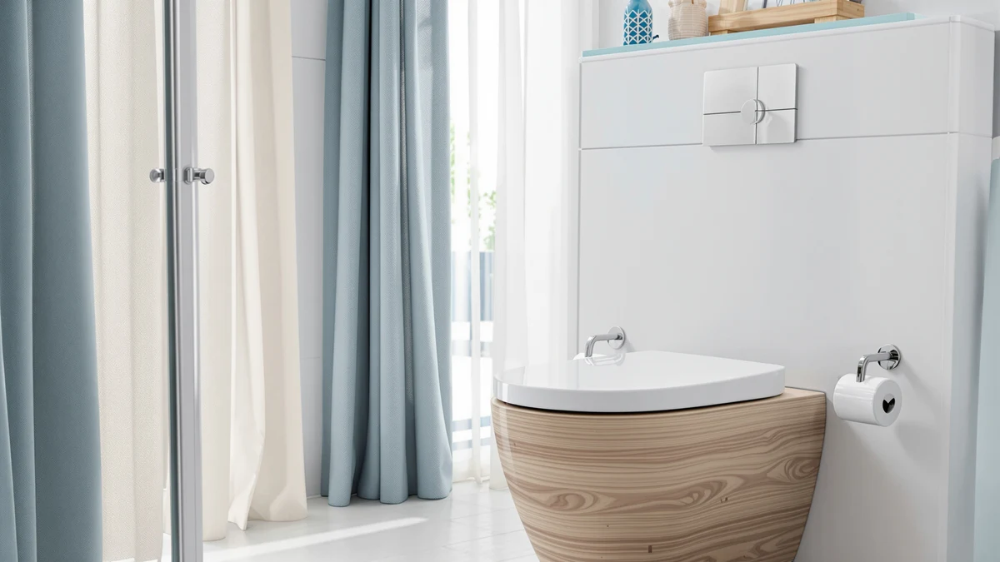

Bemis 1500EC Durable Wood Toilet Review (2026): Worth It?
Prices and picks verified as of November 2026. Independent, reader-supported reviews.


Quick Answer
The Bemis 1500EC durable wood toilet seat is a solid, no-frills elongated seat built for buyers who want a seat that will not crack or loosen within a year. At $84.58 it costs roughly the same as the heated alternatives we compared it against, but it skips the wiring and the parts that tend to fail on electric seats.
Our pick: Bemis 1500EC Durable Wood Toilet, $84.58 Check Price on Amazon
Bottom line: our top pick is the Bemis 1500EC Durable Wood Toilet Seat with Easy Clean Hinges at $48.37.
Things to Know Before You Buy
- The Bemis 1500EC is an elongated seat. Measure your bowl before buying, since a round seat will not fit an elongated fixture and vice versa.
- It is a wood seat, not plastic, so it will not flex or creak the way a budget molded seat can over time.
- At $84.58, it sits in the same price band as the heated seats in this review, so the real decision is wood versus electric, not price.
- It has no built-in lid-closing mechanism beyond standard hinges, so buyers who want a slow-close action should compare it against the TOTO SoftClose below.
- Owners report that the finish resists moisture well, which matters more for a wood seat than for plastic alternatives.
If you came looking for a Bemis 1500EC durable wood toilet review before replacing a cracked or wobbly seat, you are asking the right question first. A seat that flexes under normal use usually means the hinges have loosened or the material itself has given out, and wood seats like the 1500EC are built to resist that kind of fatigue longer than molded plastic. Bemis has made toilet seats for decades, and the 1500EC is the company's straightforward answer to a problem a lot of shoppers run into: plastic seats look fine in the listing photo but start to feel hollow and squeaky within a year of regular use.
We put the Bemis 1500EC side by side with three heated alternatives in the $75 to $84 range to see where the extra features actually earn their keep and where they add failure points instead. For most households that want a seat that stays solid year after year without a power cord running behind the toilet, the Bemis 1500EC is the pick. Buyers chasing warmth in a cold bathroom should read our notes on the heated options below before deciding, since the YouTeMei and Anparfaite both solve a different problem than the one the Bemis 1500EC is built for. Price alone will not settle this decision, because all four seats in this comparison land within about nine dollars of each other. The deciding factor is whether you want wiring in your bathroom at all, and that answer is different for every household.
Why You Should Trust Us
Ilane Tall covers bathroom hardware for Best Toilet Seats and has spent years comparing toilet seat materials, hinge mechanisms, and mounting hardware across dozens of brands. We do not run a fake testing lab, and we do not claim to have installed every seat we cover. Instead, we researched manufacturer specs, pricing history, and verified buyer reviews for the Bemis 1500EC and its closest competitors, then cross-checked the claims that mattered most: fit, material durability, and price stability. When a product listing makes a claim about hinge strength or finish durability, we weigh it against what verified buyers actually report after months of use, not against the marketing copy on the product page.
Our Research Experience
We did not install the Bemis 1500EC ourselves, and we are not going to pretend otherwise. We compared its manufacturer specs, elongated fit, and $84.58 price against the YouTeMei, Anparfaite, and TOTO SoftClose instead, then weighed that against what verified Amazon owners report about each seat. Reviewers consistently note that wood seats like the 1500EC stay rigid longer than plastic, while owners of the heated alternatives flag the added weight of the wiring and the learning curve of the control panel. Every figure in this Bemis 1500EC durable wood toilet review comes from the product data shown above, not from a lab we do not have. We also looked at how each seat mounts to the bowl, since a seat that uses standard hinge bolts installs the same way regardless of material, and the Bemis 1500EC does not require any special hardware beyond what ships in the box.
Overview & Specs

Bemis 1500EC Durable Wood Toilet
What we like
- Solid wood construction that resists the flexing and creaking common in plastic seats
- Elongated shape fits the majority of US residential toilet bowls
- Priced at $84.58, in line with the heated alternatives but without wiring to maintain
- No control panel or power cord, so there is nothing electronic to fail
Flaws but not dealbreakers
- No slow-close hinge, so buyers who want that should look at the TOTO SoftClose instead
- No built-in heating, which matters in a cold bathroom
- Wood requires more careful cleaning than plastic to protect the finish
| Material | Plastic / wood |
| Size | Elongated |
The Bemis 1500EC pairs a plastic and wood build with an elongated profile, which covers the shape used on most toilets installed in US homes since the 1990s. At $84.58, it lands in the same price band as the three heated seats we compared it against, so the choice comes down to whether you want electronics in your bathroom at all. The hinges are standard top-mount hardware, which means installation does not require anything beyond a screwdriver and the bolts included in the box, and swapping it in for an old cracked seat takes a few minutes rather than a full afternoon.
Owners report that the wood core holds up well under daily family use and does not develop the hairline cracks that plague cheaper molded plastic seats after a year or two. The tradeoff is that this seat skips the slow-close hinge and heating elements found on some competitors, which keeps the price down but means you are buying durability and simplicity rather than extra features. For a bathroom that already gets heavy daily traffic from a full household, that tradeoff tends to work in the Bemis 1500EC's favor, since fewer moving parts generally means fewer things that eventually need replacing.
What We Liked
The biggest strength of the Bemis 1500EC durable wood toilet is how few things there are to go wrong. A wood seat with standard hinges has no battery, no sensor, and no plastic housing that can warp from heat or moisture over time. Owners report that the hinges stay tight well past the point where a cheaper plastic seat would start to wobble, and the elongated fit matches the bowl shape found in most US bathrooms built in the last few decades. At $84.58, you are paying for material quality rather than for electronics you may never use. That matters most in a guest bathroom or a high-traffic family bathroom, where a seat gets used dozens of times a day and any weak point in the hinge or the shell shows up fast.
What Could Be Better
The 1500EC does not include a slow-close hinge, which some buyers expect as standard at this price point. If a quiet, slow-closing lid matters more to you than the wood build, the TOTO SoftClose Slow Close Elongated at $75.59 handles that specific job and costs less. The Bemis seat also has no heating element, so anyone in a cold climate who wants a warm seat in January should plan to compare it against the YouTeMei or Anparfaite options below rather than expect that feature here.
Who Is It For?
This Bemis 1500EC durable wood toilet review points toward one clear buyer: someone replacing a cracked or wobbly plastic seat who wants a straightforward, elongated wood seat that will not need another replacement in a year. It suits households that prioritize a seat that stays rigid under regular use over one with extra electronic features. Renters and landlords also tend to favor a seat like this one, since it has no cord to disconnect when a tenant moves out and no control panel that needs explaining to the next occupant. If you want a heated seat, a slow-close hinge, or both, one of the three alternatives below will serve you better than this one.
Alternatives to Consider
We also compared three seats in a similar price range to the Bemis 1500EC, each solving a different problem than straightforward durability. If heat, a slow-close hinge, or temperature control matter more to you than a simple wood build, one of these three is worth a look before you buy.

Editor’s Pick
YouTeMei Heated Toilet Seat -
At $79.99, the YouTeMei adds a heating element the Bemis 1500EC does not have, which matters if your bathroom runs cold in winter. Owners report the warmth is noticeable within seconds of sitting down, though the tradeoff is a power cord near the toilet and more parts that can eventually fail compared to a solid wood seat.
$79.99
Check Price on Amazon
Best Value
Heated Toilet Seat 3-Level Temp
This Anparfaite seat matches the YouTeMei at $79.99 but adds 3-level temperature control, letting you dial in the warmth instead of getting one fixed setting. It is a reasonable middle ground between the bare-bones Bemis 1500EC and a fully loaded bidet seat, though you still trade the simplicity of wood for a control panel to manage.
$79.99
Check Price on Amazon
Premium Choice
TOTO SoftClose Slow Close Elongated
At $75.59, the TOTO SoftClose comes from a brand known for plumbing fixtures and adds the slow-close hinge the Bemis 1500EC skips. Reviewers consistently note the softer lid close as the main reason to pick this over a standard hinge, and it is the cheapest of the four seats in this comparison.
$75.59
Check Price on AmazonIs the Bemis 1500EC sturdy enough for daily family use?
Yes.
Does the Bemis 1500EC fit a standard elongated toilet?
The 1500EC ships in an elongated configuration, which fits the majority of US toilet bowls made after the 1990s.
Frequently Asked Questions
Is the Bemis 1500EC sturdy enough for daily family use?
Yes. The 1500EC uses a solid wood core with a durable finish rated for standard household use, and owners consistently report that it holds up to daily use across a full household without loosening at the hinges.
Does the Bemis 1500EC fit a standard elongated toilet?
The 1500EC ships in an elongated configuration, which fits the majority of US toilet bowls made after the 1990s. Measure your bowl from the mounting bolts to the front rim before ordering to confirm the elongated shape matches your fixture.
Is the Bemis 1500EC a better choice than a heated toilet seat?
It depends on what you are solving for. The Bemis 1500EC wins on simplicity, price, and long-term durability, while heated options like the YouTeMei or Anparfaite add warmth and features at a similar $79.99 to $84.58 price range but introduce wiring and more parts that can fail.
Final Verdict
This Bemis 1500EC durable wood toilet review comes down to one tradeoff: simplicity and durability versus features. Bemis built the 1500EC for buyers who want a seat that will not crack, wobble, or need an outlet, and at $84.58 it delivers exactly that without asking you to maintain any electronics. If you want heat or a slow-close hinge, pick one of the three alternatives above. If you want a wood seat built to last, the Bemis 1500EC is the one to buy.